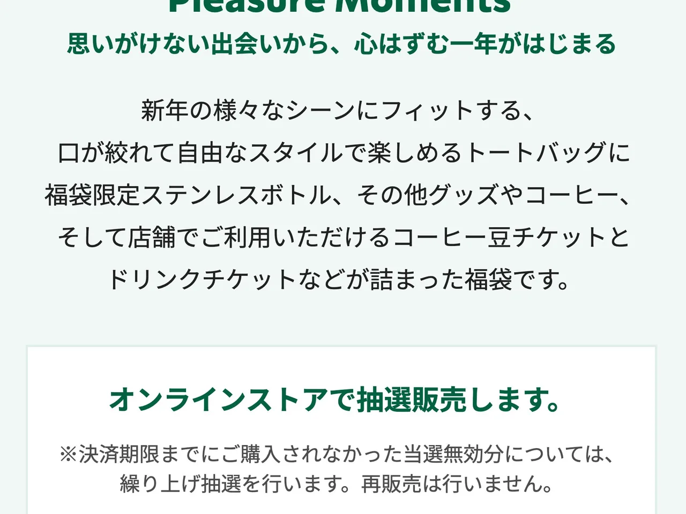

スターバックス福袋2027は、2026年11月22日時点で新規エントリーが終了しています。応募済みの方への当選発表は11月25日11:00〜17:00頃の予定です。当選した場合は12月2日23:59までにオンラインストアで決済します。価格は9,500円（税込・送料無料）です。

01当選発表はいつ？結果を確認できる場所
応募済みの方は、11月25日の当選発表後にMy Starbucksから確認できます。 当選メールはMy Starbucksに登録したアドレスに届きます。公式アプリを入れている場合は、ログイン後のInbox（Message）でも当選案内を確認できます。発表時刻は前後する場合があります。
| 確認項目 | 公式の案内 |
|---|---|
| 新規エントリー | 2026年11月15日23:59で終了 |
| 当選発表 | 2026年11月25日11:00〜17:00頃の予定 |
| マイページでの確認 | My Starbucksの「オンラインストア」から「抽選販売申込履歴」へ |
| 当選者の決済 | 2026年12月2日23:59まで |
| 配送日 | 2027年1月1日〜7日から購入手続き時に選択 |
当選メールの再送はありません。受信制限を設定している方は、公式が案内する mx.starbucks.co.jp と starbucks.smp.ne.jp からのメールを受信できるようにします。
02当選後の購入手続きと配送
- 当選の案内メールに従って、公式オンラインストアの購入ページへ進みます。
- 配送先を入力し、2027年1月1日から7日の間で配送日を選びます。
- 12月2日2359までに購入手続きを完了します。支払いはクレジットカード、Web登録済みスターバックス カード、スマートフォンから購入する場合のキャリア決済から選びます。
購入手続きが済むと、届け先と配送日の変更はできません。 長期不在や受取拒否などで返送された場合、再発送も行われません。購入画面で住所と、実際に荷物を受け取れる日を確認してください。
注意決済期限を過ぎると当選は無効です。未決済分は繰り上げ抽選が行われます。公式は再販売を行わないと案内しています。
03福袋の中身とチケットの使い方
口を絞れるトートバッグに、福袋限定ステンレスボトル、グッズ3点、コーヒー豆2種、各種チケットが入ります。グッズは福袋限定品や過去の販売品からランダムに入ります。コーヒーはパイクプレイス® ローストとライトノート ブレンド®で、どちらも100gの中挽きです。

| チケット | 枚数と利用内容 | 2027年の有効期間 |
|---|---|---|
| コーヒー豆 | 1枚。税込2,000円までの対象の豆商品1点 | 1月4日〜7月2日 |
| ドリンク | 7枚。1枚で1杯、店内700円・持ち帰り687円まで | 1月1日〜6月27日 |
| フードトライアル | 6枚。1枚でフード1個を店内100円・持ち帰り98円引き | 1月1日〜6月27日 |
コーヒー豆チケットと、ドリンク・フードのチケットは利用開始日と期限が異なります。 豆とドリンクはチケットの金額を超えた分を支払います。コーヒー豆はスターバックス リザーブなど一部対象外の商品があり、チケットを利用できない店舗もあります。使う前に手元の券面を確認してください。
04よくある質問
今から抽選に応募できますか？
新規エントリーは11月15日23:59で終了しました。販売は公式オンラインストアの抽選方式です。
当選メールが見当たらないときは？
当選発表後に、My Starbucksの抽選販売申込履歴から結果を確認できます。公式アプリを利用している方はInbox（Message）にも当選案内が届きます。
決済後に配送日を変えられますか？
手続き完了後の配送日とお届け先は変更できません。購入手続きの際に、1月1日から7日の中で受け取れる日を選んでください。
05まとめ
結論応募済みなら11月25日の当選発表を確認し、当選したら12月2日23:59までに決済します。
- 当選メールを確認できないときは、My Starbucksの抽選販売申込履歴を開きます。
- 福袋の価格は9,500円（税込・送料無料）です。購入時に配送先と配送日を確定します。
- ドリンク・フードとコーヒー豆でチケットの期限が異なります。同じ日に期限を迎えるのはドリンクとフードです。
ほかの販売方式も確認したい方は、サンリオ福袋2027の案内も参照できます。